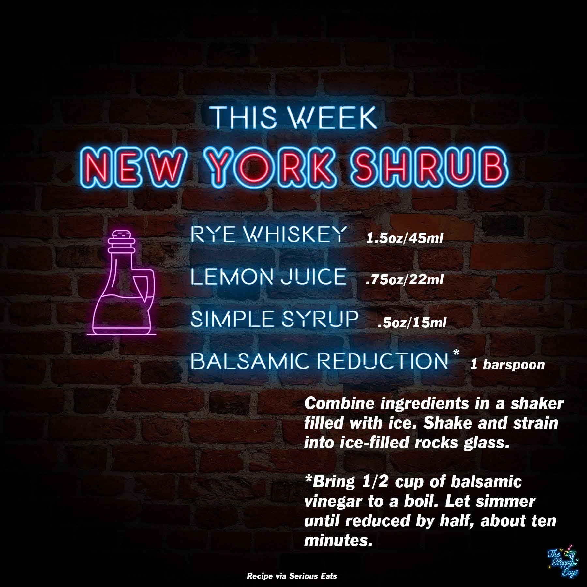

Sloppy Drinks
Podcast
About

New York Shrub
Ingredients
Rye Whiskey (1.5oz/45ml)
Lemon Juice (.75oz/22ml)
Simple Syrup (.5oz/15ml)
Balsamic Reduction* (1 barspoon)
Steps
Combine ingredients in a shaker filled with ice.
Shake and strain into ice-filled rocks glass.
Notes
Episode 65 - New York Shrub (January 14, 2022)
Serious Eats New York Shrub Recipe
*Bring 1/2 cup of balsamic vinegar to a boil. Let simmer until reduced by half, about ten minutes.
Artwork by The Sloppy Boys